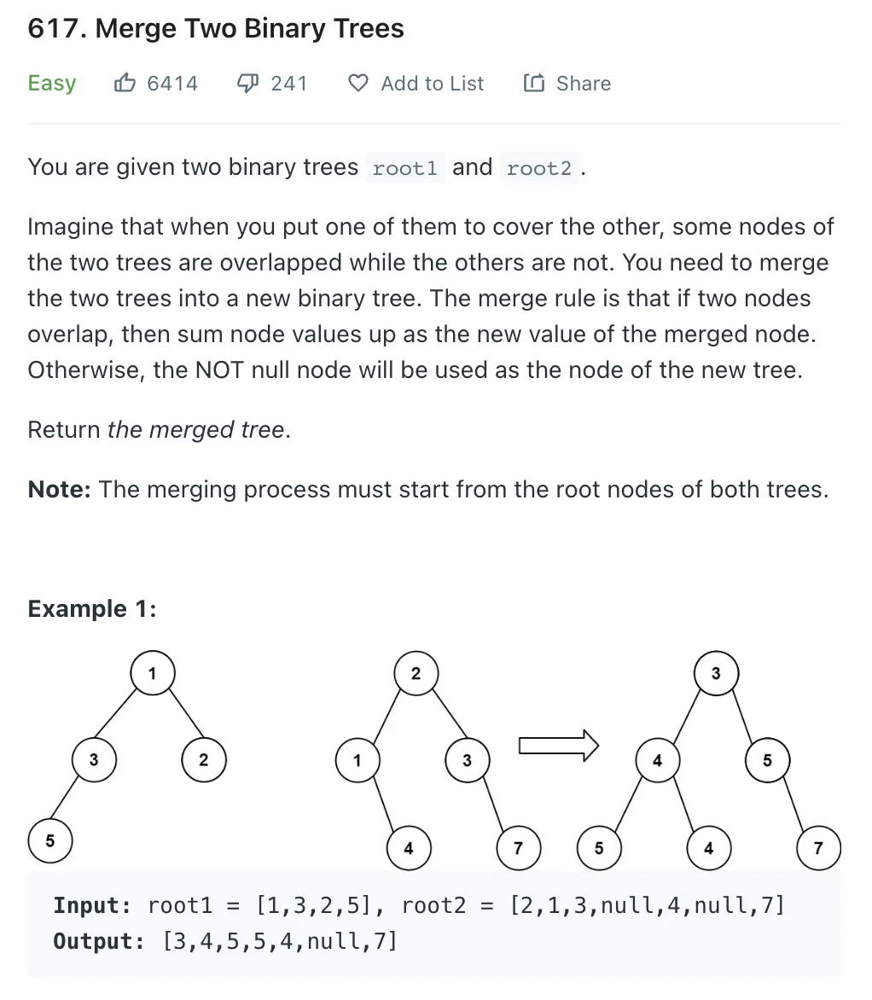
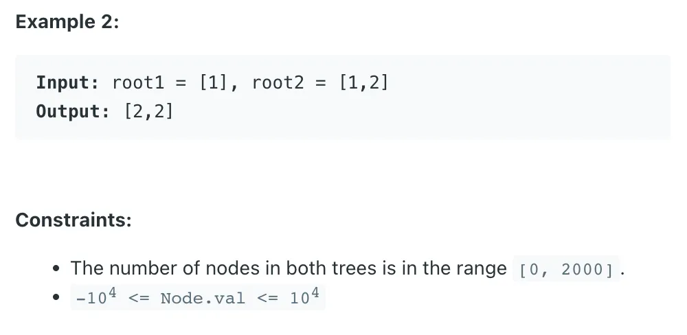

617. Merge Two Binary Trees
Question


✍🏽 My Solution
Runtime: 0 ms, faster than 100.00% of Java online submissions for Merge Two Binary Trees.
Memory Usage: 42.5 MB, less than 82.98% of Java online submissions for Merge Two Binary Trees.
class Solution {
public TreeNode mergeTrees(TreeNode root1, TreeNode root2) {
if (root1 == null) return root2;
if (root2 == null) return root1;
TreeNode newNode = new TreeNode(root1.val + root2.val);
newNode.left = mergeTrees(root1.left, root2.left); // merge左子樹
newNode.right = mergeTrees(root1.right, root2.right); // merge右子樹
return newNode;
}
}
🧠 Thought Process
- Why did I choose this particular implementation?
- 參考王爭題解